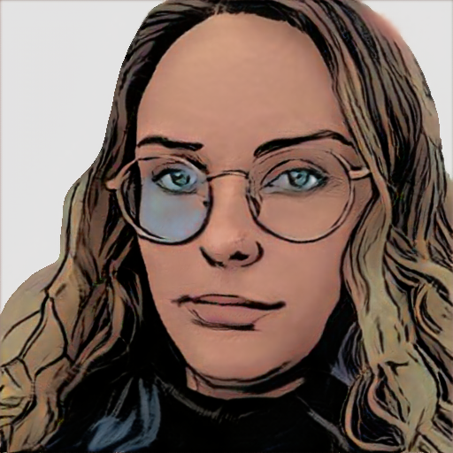

- Home
- >
- Currículo
Currículo
Dados Pessoais

Nome:
Diane do Nascimento Castedo
Data de Nascimento:
16/08/1991
Residência:
Caxias do Sul - RS, Brasil
Idiomas:
Português (Nativo)
InglêS (Intermediário)
Espanhol (Básico)
Sobre Mim
Me chamo Diane, tenho 31 anos e moro em Caxias do Sul. Realizei o bacharelado em Direito e advoguei por três anos, no entanto, sempre fui apaixonada por tecnologia, no ano de 2020 iniciei meus estudos em programação por conta própria e em 2021 ingressei no técnólogo de Análise e Desenvolvimento de Sistemas pela Uninter, iniciando minha migração de carreita. Atualmente trabalho como desenvolvedora de software na empresa Cia Sistemas situada na cidade de Caxias do Sul - RS, onde participo de um projeto de atualização de stack de um sitema ERP. Também participo como aluna da 1ª Edição do Starter Data Science na Growdev, com o objetivo de me tornar uma cientista de dados, profissão na qual pretendo atuar futuramente. Possuo conhecimento em React, NodeJS, Postgres. Estou desenvolvendo habilidades em análise de dados com Python, métodos estatiscos e manipulação de dados em bancos relacionais e não relacionais.
Educação
2021-Em andamento
Análise de Desenvolvimento e Sistemas - UNINTER
2010-2016
Direito - Centro Universitário da Serra Gaúcha
Experiência de Trabalho
2021 - atualmente
Desenvolvedora de Software - Cia Sistemas - Caxias do Sul
2017 - 2021
Advogada - Mello & Fogaça - Caxias do Sul
Contato
dncastedo@gmail.com
(54) 9 99150-2653
← Voltar ao início